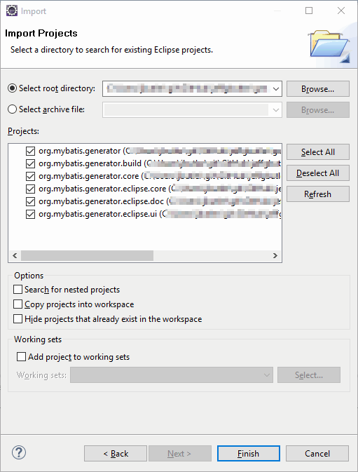

This page contains reference information about how to build and debug the MyBatis Generator (MBG) feature from source.
The MBG feature is structured as six different Eclipse projects - a feature project,
four plugin projects, and a project that holds the build scripts. The feature project
groups the four plugins together for easy installation. The MBG feature project is
org.mybatis.generator.
That project references the four plugin projects. The plugin projects are structured as
follows:
| Plug-in Project | Description |
|---|---|
org.mybatis.generator.core |
This plugin holds the Java source for the core MBG library. The project for this plugin contains linked folders to the MBG source tree. |
org.mybatis.generator.eclipse.core |
This plugin holds Java support classes for the other plugins. This plugin does not contribute to the Eclipse user interface. This plugin includes classes for Java file merging, and Eclipse implementations of the MBG callback interfaces. |
org.mybatis.generator.eclipse.doc |
This plug-in holds the documentation for MBG. There is a build file in this plug-in (buildDoc.xml) that will build the documentation and package it for inclusion into the Eclipse help system. |
org.mybatis.generator.eclipse.ui |
This plug-in holds the Java code for the Eclipse user interface for MBG. If you are experiencing trouble with the plugin specific features (like the integrated Ant task), then the code for those features will be found in this plugin. |
There are two other Eclipse projects that complete the feature:
| Project | Description |
|---|---|
org.mybatis.generator |
This project is the Eclipse feature project for MBG. |
org.mybatis.generator.build |
This project holds the build scripts and properties for the feature build. |
The following instructions show how to setup an Eclipse workspace for building the MBG feature and plug-ins from the latest source in the Subversion repository. We assume that you are somewhat familiar with Subversion and the Eclipse plug-in development environment (PDE). These instructions also assume you are using Eclipse version 3.7.1 (Indigo, SR1).
.../core/mybatis-generator-core/src folder in the source tree from SVN
(Window>Preferences>General>Workspace>Linked Resources)
At this point the projects should be successfully compiled in Eclipse. If you want to debug something in the plug-in, you will need to start another instance of Eclipse in debug mode. The following instructions explain how to do this.
Once you have the other instance of Eclipse started you should create a new Java project in the new workspace, create and fill out an MBG configuration file, and then run MBG. MBG should eventually hit your breakpoint, and then you step through the code.
The following classes will likely be of the most interest in debugging:
| Class | Description |
|---|---|
org.mybatis.generator.eclipse.ui.actions.RunGeneratorThread |
This class is a thread that runs MBG on the selected configuration file.
You can set a breakpoint in the run method of this class to follow
the MBG code generation process from the beginning.
|
org.mybatis.generator.eclipse.core.merge.JavaFileMerger |
This class implements the Java file merge function. You can set a breakpoint
in the getMergedSource method to follow the merging process.
|
The documentation for MBG is integrated into the Eclipse help system.
The documentation is partially generated (Javadocs), partially copied in from the
core MBG source tree, and partially maintained in the plugin itself.
This full documentation set is not in Subversion because it is partially generated. If you would
like to rebuild the documentation, simply execute the buildDoc.xml file
in the org.mybatis.generator.eclipse.doc project (an Ant build file).
If you want to build an updated version of the feature and distribute it locally, then follow these steps:
build.xml in the org.mybatis.generator.build
project. There are four properties at the beginning of the file that may need to
change for your local environment.
| Property | Description |
|---|---|
| baseLocation | This should be set to the location on disk of an eclipse distribution that includes the plug in development environment. |
| pdeBuildPluginVersion | This is the version of the org.eclipse.pde.build plugin.
The value in the file is the correct version for Eclipse 3.7.1
|
| equinoxLauncherPluginVersion | This is the version of the org.eclipse.equinox.launcher plugin.
The value in the file is the correct version for Eclipse 3.7.1
|
| buildDirectory | This is the target directory for the build. |
build.xml file.
build.xml file (right click, Run As>Ant Build)Once the build executes successfully, the new feature will be available
on your local drive at
/temp/mybatis.generator.build/buildRepo
unless you change the buildDirectory property above. The easiest way
to install this new version of the feature is to create a new local repository
that points to this directory (Help>Install New Software...) and install
the new version with P2.